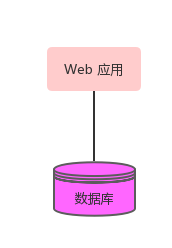
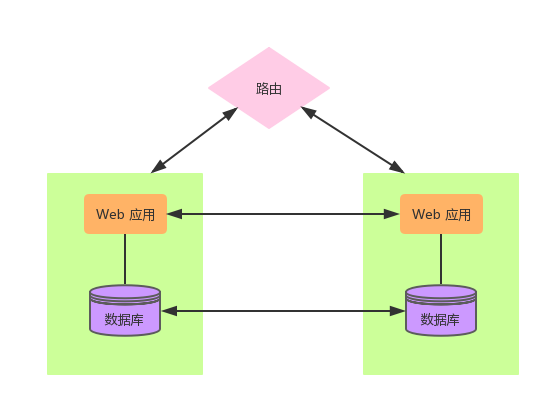
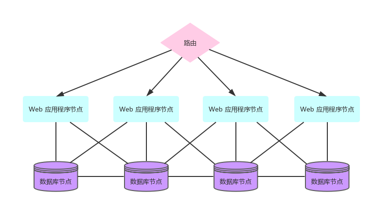

<译> 响应式 Web 应用（五）
上一篇
1.2.3 水平架构
在开发 Web 应用的时候，一些必须要考虑到的基本因素将会对程序的操作方式产生深远的影响。但不幸的是，大多数应用程序在开发之前都不会去考虑代码在生产环境发布和部署之后会发生什么。这可能会给程序造成很大的局限性，比如我们现在需要在多台服务器上运行这个程序，但如果该应用程序在设计之初就没有考虑到这种情况，那么让她在此种操作模式下运行是不太实际的，除非我们对代码进行大面积的改动。
在接下来的讨论中，我们将会认识一些部署模型并且会思考她们的优缺点。我们还将看到一种被称作为「水平部署模型」的优势，这一模型已经被响应式应用支持并使用了。
单点部署
单点部署是一种非常常见的部署模型，应用程序通常被部署在一台计算机上面，通常数据库也部署在这台计算机上面，如下图所示：

此部署模型由于其相对简单而被广泛使用，但是她有很严重的局限性。当服务器上的负载超过其阈值时，或者当机器挂了，或者应用程序升级需要安装的时候，将会导致一个无法避免的结果——应用程序不可用。这种模型所能处理的负载很大程度上取决于硬件——当需要更好的性能时，就需要更强大的计算机，更大的内存以及更快的 CPU。这种通过切换更高性能的硬件来达到增加单个服务器负载的过程称为「垂直扩展」。
克隆式部署
对于那些需要更好的性能以及可用性的程序，这里提供了一个如图所示的比较流行的设置，这种设置涉及到了跨两台计算机的数据备份。

在这种设置下，数据库和服务端的状态都需要进行备份，对于服务端的状态，比如，服务端用户 session 或者缓存，就可以使用 Tomcat 的集群功能 或者其他类似的功能来进行备份。在数据库层面，可以采用「主主同步」的方式进行备份。
这种方式使得我们可以去逐个更新部署，当程序升级的时候我们也能保证服务能正常进行。但是，当需要备份多个数据的时候，正确配置这种设置的复杂性将会大大提高。
在开发这种模式下的应用程序时，如果从开发人员的角度来看，程序仍然好像是在单个计算机上运行一样，并且由底层框架或应用程序服务器负责备份服务器端的状态。
尽管这种模式有一些优点，但是我们看到，多机设置的固有复杂性并没有被消除，反而又增加了程序服务端的复杂性。与处理程序本身的错误相比较，要优雅地（为了不给客户带来困扰）去处理服务端的错误状态更加困难，因为错误发生在不同的层级上面，并且服务端的状态也并不是应用程序最需要关注的点。
水平部署
在水平架构中，如下图所示，同一个 Web 应用程序被部署到了多个节点上面。

这些节点可能是计算机或者虚拟机，但都有一个重要的特点就是彼此互不了解，并且也不共享任何状态。这种“非共享”的原则就是「无状态」架构的核心。
这些节点都是独立的，其中某一个的缺失或者存在都不会以任何方式影响其他节点（除了负载增加或减少时可能会有影响，当然这取决于流量的大小）。这种架构的优点是，只需要通过向前端路由器添加新节点，可以很容易地扩展应用程序。
在这种模式下，我们也能实现滚动更新节点，首先将带有新版本应用程序的新节点引入进来，然后将路由层切换一下使其指向新的节点，这样就完成了更新。这种被称作为「热部署」的机制很很受“平台即服务”（PaaS）供应商们的欢迎，比如 Heroku。
在存储方面，与无共享的 web 应用程序相对应的是一种支持某种集群形式的存储技术。如 MongoDB、Cassandra、Couchbase 以及新版本的关系型数据库（如 WebScaleSQL），这些 NoSQL 型的数据库非常适合这种可扩展的前端层。
使用水平架构的一个结果是用户可以通过路由层随机连接到其中一个前端节点，而不是总是在同一个节点上。由于节点之间不存在共享状态，因此无法使用服务器端 session （Servlet 标准以及基于 Servlet 标准而构建的框架中默认存在的）。 Play 框架的核心是「无共享」，并提供了基于 cookie 的客户端用户 session，这点我们将在第 8 章中讨论。
由于 Play! 所占用的内存很小，所以在通过 PaaS 或其他云平台进行多点部署时，Play! 将会是一个理想的选择，因为这些部署平台中单个节点的可用内存要远远低于一台专用服务器。